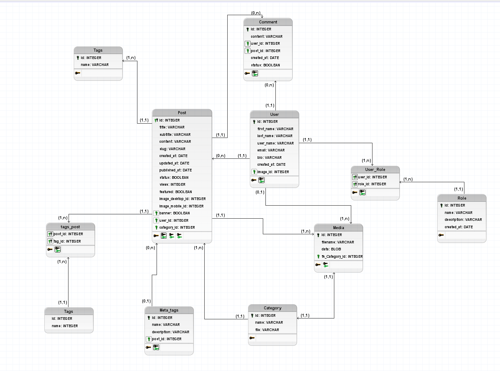

Desenvolvimento de software
Minha experiência mais relevante com desenvolvimento de software está sendo no meu primeiro projeto pessoal com Spring Boot e Next.js, onde estou criando um blog para publicar alguns artigos que fiz durante meus estudos na faculdade. No backend, utilizo Spring Boot para gerenciar a API, implementar a lógica de negócio e lidar com o banco de dados (Mysql), aproveitando a integração com JPA/Hibernate para persistência. No frontend, utilizo Next.js para criar uma interface moderna e responsiva, aproveitando as funcionalidades de SSR (Server-Side Rendering) e componentes reutilizáveis. Durante o desenvolvimento, estou aprendendo a lidar com a configuração de dependências no Spring Boot, a criação de rotas RESTful e o consumo dessas APIs no Next.js, além de aplicar conceitos de integração entre frontend e backend.
Diagrama Entidade-Relacionamento do Blog
